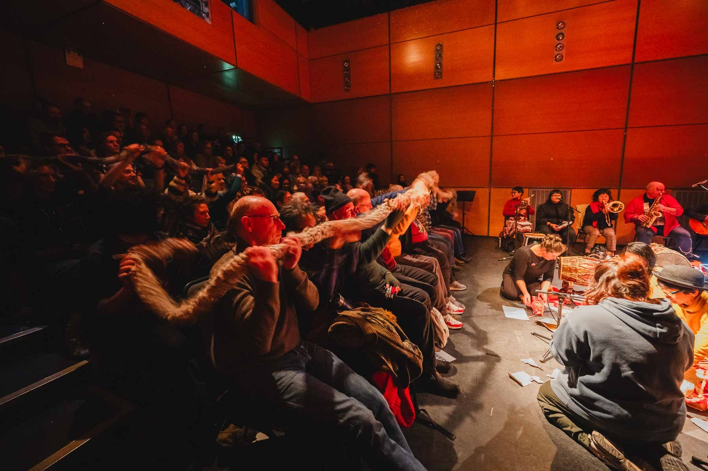

Maria Sappho · 2025
for many bodies and one 30-metre soft instrument
percussion sounds performed by Colin Frank

The audience plays the tube together from their seats. Photo: Brian Hartley, Still Motion Art
One instrument that needs many bodies to play it, like a gamelan. A very long, very soft rope crocheted
from bed sheets found in charity shops, with a piezoelectric cable hidden inside that hears every
shake, tug and rustle. Nobody can play it alone.
Premiered November 2025 at the CCA, Glasgow (GIOfest XVII), as part of Tonna Miann.
Instructions
Lay the tube along the audience: across laps, along the rows, looped through the space.
It cannot be played alone. Invite everyone to pick up a piece of it.
Move together. Lift it, shake it, ripple it, pass a wave from one end to the other.
Listen through the tube. A single jolt rings out long. Many hands shaking scatter into short strikes.
When everyone becomes still, one last sound rings. Let it fade completely.
Begin again, or let go. The piece ends when the last person puts it down.
Two ways to present it
Performance. Movement triggers Colin Frank's gongs, bells and tam-tams through the Teensy box. Calm brings long sounds, busy brings short ones.
Installation. Hang the tube in loops from the ceiling and simply amplify it through a guitar amp. No code, no samples. Drop in and play.